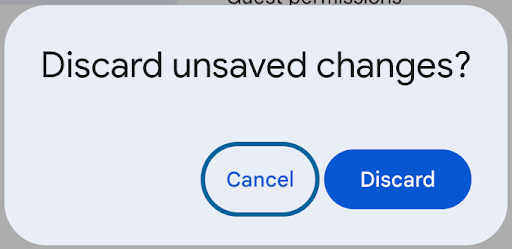
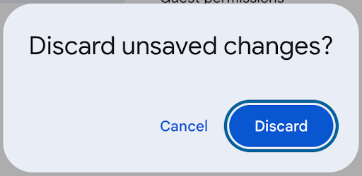
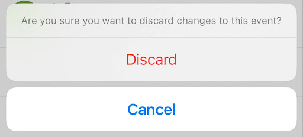
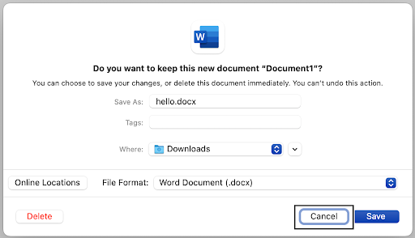
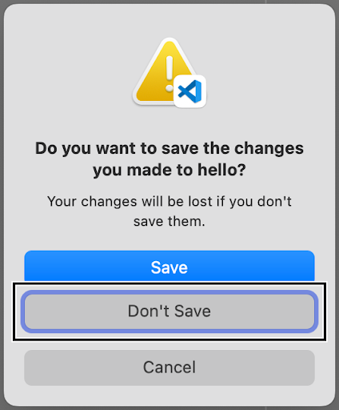

In user interfaces, components are distinct, reusable elements
that serve specific purposes. These are the building blocks of
any interface, and are a consistent way for designers to
incorporate different interactive features into their websites
and apps.
Popups are a common component used to display warnings to users.
A Save Changes popup component asks a user to confirm whether
they want to save or discard some changes they make to a
document. If poorly designed, these components can disrupt user
flow, and can even cause users to lose important changes. Not
only does a Save Changes popup component have to be designed to
be functional, but it must also be designed accessibly, such as
by allowing users to have multiple modes of input and output.
Inclusive design ensures that all users can have a positive
interaction with the component!
3 case studies of the Save Changes popup component
G Cal
Initial popup display for G Cal

Popup display for G Cal after using tab key to
select Cancel

Popup display for G Cal after using tab key to
select Discard

Mobile (ios) popup display for G Cal
MS Word
Initial popup display for MS Word

Popup display for MS Word after using VoiceOver to
select Cancel
VS Code
Initial popup display for VS Code

Popup display for VS Code after using VoiceOver to
select Don't Save
Inputs
Different users interact with components differently. Whether
they have access to different types of devices, rely on
assistive technologies like screen readers and keyboard
navigation, or simply have a preference for what kind of input
they like to use, it's important to design interfaces that
accommodate diverse user inputs.
Key observations for different inputs
Mouse/touchpad
Very standard for buttons to be selected on release and not
on press - easily memorable for users that generally use
computers
All of the popup dialog texts are selectable, but none of
the button texts are. Also seems standard, making it easy to
learn if a user has experience with other interfaces
following the same standard
Keyboard
Standard for escape key to be equivalent for cancel - easily
memorable for users who generally use a keyboard to navigate
their computer, as they might come across this action a lot
G Cal - efficient to be able to use tab to navigate between
button options
MS Word and VS Code - hard for users to access "Don't save"
/ "Delete" tabs - if they can't use a mouse, how will they
ever reach these buttons?
For the buttons that react on key press, it might be hard
for users to undo these actions if they pressed the key on
mistake
Overall, G Cal seems to be the most accessible, as they all
have similar mouse/touchpad interaction capabilities. The
main benefit is that users of G Cal are always able to
access all of the buttons with the keyboard, while keyboard
users for MS Word and VS Code can only do this if they have
VoiceOver on.
Outputs
Just as users provide input in many ways, they interpret outputs
in different ways, too. Users may rely on visual cues, screen
readers, haptic feedback, or other assistive technologies, and
it is important to design interfaces that clearly communicate a
component's state through multiple output modalities.
Key observations for different outputs
Overall, G Cal provided the most responsive visual output. While
MS Word and VS Code had zero responses to mousepad movement, G
Cal highlighted a button when it was hovered over. All three
applications had very similar output responses when navigating
the popup using VoiceOver.
Making tradeoffs to redesign the Save Changes popup
(an iterative process)
State models can help designers visualize how a component
behaves in response to different user interactions. By mapping
out the various states and transitions, state models allows
designers to understand how users navigate and interact with a
component. The models can also help identify accessibility gaps
and improve efficiency across component use.
mouse users
keyboard users
The final component redesign
Reflection
Inclusive design shapes how users interact with interfaces,
ensuring accessibility and usability for diverse needs. The
redesigned Save Changes popup component makes additional efforts
to support accessibility, but some gaps may still remain.
However, this new design still offers improvements over the
original case study examples, whose input/output features impact
users with impairments.
I have applied the concept of user accessibility to my
design by broadening the scope of users who are able to use
the Save Changes popup. Adding reactive outputs to keyboard
input allows users who prefer to or are only able to
interact using a keyboard to be able to navigate this
component, as my design allows all users to toggle between
button choices using their keyboard.
The original component designs for MS Word and VS Code did
not allow users to switch between button choices using their
keyboard - which may have been a "mismatch" (as defined by
Kate Holmes' in her 99U talk
Rethink What Inclusive Design Means
). In these designs, there is an absence of keyboard input
response, hindering keyboard users' ability to navigate with
the popup.
VoiceOver users of MS Word and VS Code are positively
impacted by both the input and output features of the Save
Changes popup redesign. The original popup responds to
keyboard input when VoiceOver is activated, allowing these
users to actually be able to navigate through the popup
dialogue.
However, non-VoiceOver keyboard users are at a disadvantage,
as they are only able to select the “Cancel” and “Save”
button options, activated by the escape and enter keys
respectively, and they have no visual feedback on what
button was selected once they exit the popup.
The original design may have been made by designers who were
accustomed to using a mouse to navigate their screens - an
example of ability bias.
Generally, I think mouse and keyboard users are most
commonly prioritized when designers are creating components.
This is because, as Holmes described in her talk, designers
often create in ways that match the way that they interact
with the components (ability bias). Given that the majority
of designers are probably using laptops or desktop computers
that have keyboards and/or mice, it would follow that most
of their designs are made with these user features in mind.
This most negatively impacts users with physical or visual
disabilities, who are unable to fully use a keyboard/mouse
setup. This could also take away from the user experience of
people who simply don't have access to devices with
keyboards and mice, such as mobile devices. It might be
extremely frustrating for these users to use such designs if
there aren't multiple ways to do an action on the interface.
For example, if it is necessary for a keyboard user to press
down multiple buttons at once in order to do something, a
mobile user might never be able to replicate this action if
their keyboard doesn't contain the same keys (such as ctrl),
or a user with physical disability may never be able to do
this action if they are physically unable to reach or press
multiple buttons simultaneously.